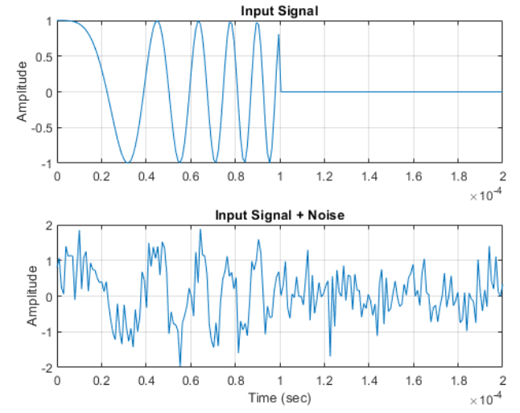
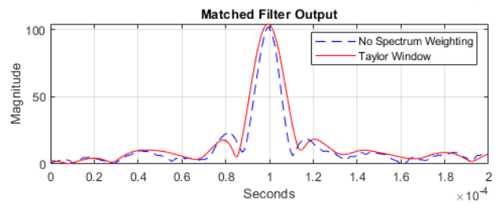
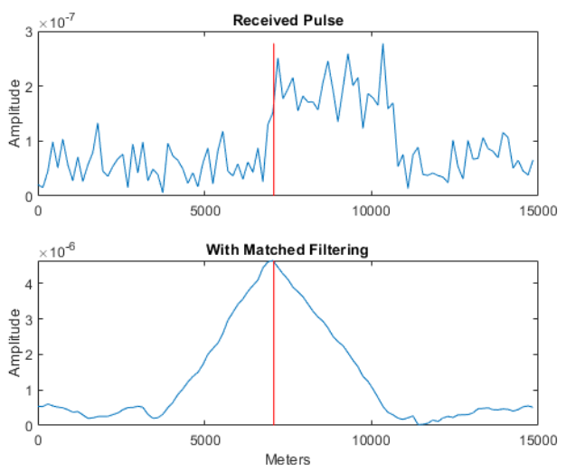

_preview_rev_1.png)
|
K.J. Somaiya Virtual Labs |

|
Experiment 10 - Impulse response of a matched filter
Aim: -
Impulse response of a matched filter for optimum detection using matlabApparatus: -
Octave
Diagram: -
  
Code: -
- Create a linear FM waveform with a duration of 0.1 milliseconds, a sweep bandwidth of 100 kHz, and a pulse repetition frequency of 5 kHz. Add noise to the linear FM pulse and filter the noisy signal using a matched filter. This example applies a matched filter with and without spectrum weighting.
- Specify the waveform.
- Create a matched filter with no spectrum weighting, and a matched filter that uses a Taylor window for spectrum weighting.
- Create the signal and add noise.
- Filter the noisy signal separately with each of the filters.
pkg load signal
% Waveform parameters
pulse_width = 1e-4; % Pulse width in seconds
prf = 5e3; % Pulse repetition frequency in Hz
sample_rate = 1e6; % Sample rate in Hz
num_pulses = 1; % Number of pulses
sweep_bandwidth = 1e5; % Sweep bandwidth in Hz
% Generate time vector
t = 0:1/sample_rate:(pulse_width - 1/sample_rate);
t = repmat(t, 1, num_pulses);
% Generate linear frequency modulated (LFM) waveform
fm_modulation = chirp(t, 0, pulse_width, sweep_bandwidth);
% Add noise to the waveform
x = fm_modulation + 0.5*(randn(size(fm_modulation)) + 1j*randn(size(fm_modulation)));
% Generate matched filter coefficients
matched_filter = conj(flip(fm_modulation));
% Apply matched filter to the noisy waveform
y = conv(x, matched_filter, 'same');
% Plot the input signal
figure;
subplot(2,1,1)
plot(t, real(fm_modulation))
title('Input Signal')
grid on
ylabel('Amplitude')
% Plot the input signal with noise
subplot(2,1,2)
plot(t, real(x))
title('Input Signal + Noise')
grid on
xlabel('Time (sec)')
ylabel('Amplitude')
% Plot the matched filter output
figure;
plot(t, abs(y), 'b--')
title('Matched Filter Output')
grid on
ylabel('Magnitude')
xlabel('Seconds')
legend('No Spectrum Weighting')
Matched Filtering to Improve SNR for Target Detection
- This example shows how to improve the SNR by performing matched filtering.
- Place an isotropic antenna element at the global origin (0;0;0). Then, place a target with a nonfluctuating RCS of 1 square meter approximately 7 km from the transmitter at (5000;5000;10). Set the operating (carrier) frequency to 10 GHz. To simulate a monostatic radar, set the InUseOutputPort property on the transmitter to true. Calculate the range and angle from the transmitter to the target.
- Create a rectangular pulse waveform 25 μs in duration with a PRF of 10 kHz. Use a single pulse for this example. Determine the maximum unambiguous range for the given PRF. Use the radar equation to determine the peak power required to detect a target. This target has an RCS of 1 square meter at the maximum unambiguous range for the transmitter operating frequency and gain. The SNR is based on a desired false-alarm rate of 1e-6 for a noncoherent detector.
- Set the peak transmit power to the output value from the radar equation.
- Create radiator and collector objects that operate at 10 GHz. Create a free space path for the propagation of the pulse to and from the target. Then, create a receiver and a matched filter for the rectangular waveform.
- After you create all the objects that define your model, you can propagate the pulse to and from the target. Collect the echo at the receiver, and implement the matched filter to improve the SNR.
- Generate waveform.
- Transmit waveform.
- Radiate pulse toward the target.
- Propagate pulse toward the target.
- Reflect it off the target.
- Propagate the pulse back to transmitter.
- Collect the echo.
- Receive target echo.
- Get group delay of matched filter.
- The group delay is constant.
- Shift the matched filter output.
pkg load signal
% Parameters
fc = 10e9; % Carrier frequency (in Hz)
c = 299792458; % Speed of light (in m/s)
pulseWidth = 25e-6; % Pulse width (in seconds)
prf = 10e3; % Pulse repetition frequency (in Hz)
numPulses = 1; % Number of pulses
targetRange = 5000; % Target range (in meters)
% Create pulse waveform
numSamples = round(pulseWidth * prf);
waveform = ones(numSamples, 1);
% Calculate maximum unambiguous range
maxRange = c / (2 * prf);
% Calculate transmitted power
Pt = (4 * pi)^3 * (abs(targetRange)^4) * 1 / (pulseWidth * numPulses);
Boltzmann = 1.380649e-23; % Boltzmann constant (in J/K)
Ts = 290; % System temperature (in K)
noisePower = 10 * log10(Boltzmann * Ts) - db2pow(Pt);
Pt = db2pow(Pt); % Convert to linear scale
% Generate received signal
txSignal = sqrt(Pt) * waveform; % Transmitted signal
targetSignal = sqrt(1) * exp(1i * 4 * pi * fc * (2 * targetRange / c)); % Target signal
% Add noise to the received signal
SNR = pow2db(Pt / noisePower);
noise = wgn(numSamples, 1, noisePower, 'complex');
rxSignal = txSignal + targetSignal + noise;
% Matched filtering
matchedFilter = flipud(conj(waveform));
mfSignal = conv(rxSignal, matchedFilter, 'same');
% Plotting
time = (0:numSamples-1) / prf;
range = c * time / 2;
figure
subplot(2, 1, 1)
plot(range, abs(rxSignal))
hold on
plot([targetRange, targetRange], [0 max(abs(rxSignal))], 'r')
title('Received Signal')
xlabel('Range (m)')
ylabel('Amplitude')
legend('Received Signal', 'Target Range')
hold off
subplot(2, 1, 2)
plot(range, abs(mfSignal))
hold on
plot([targetRange, targetRange], [0 max(abs(mfSignal))], 'r')
title('Matched Filtered Signal')
xlabel('Range (m)')
ylabel('Amplitude')
legend('Matched Filtered Signal', 'Target Range')
hold off